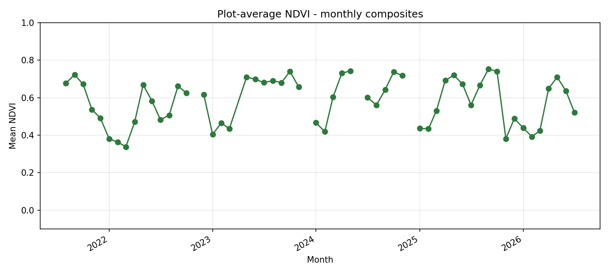
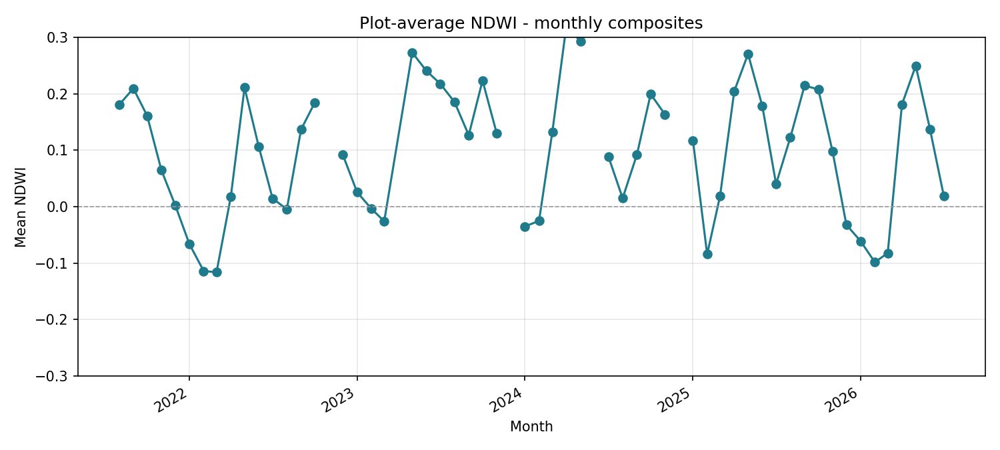
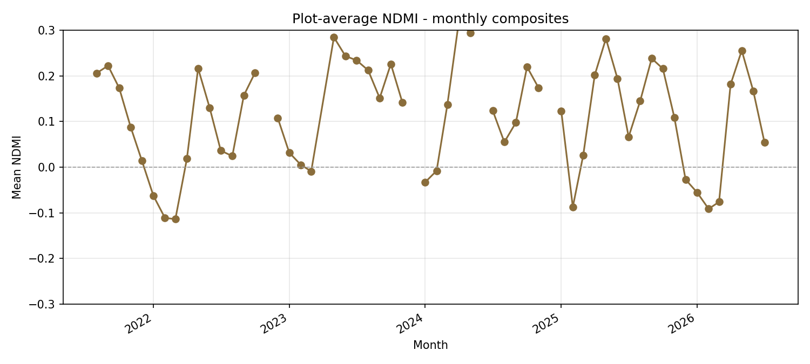
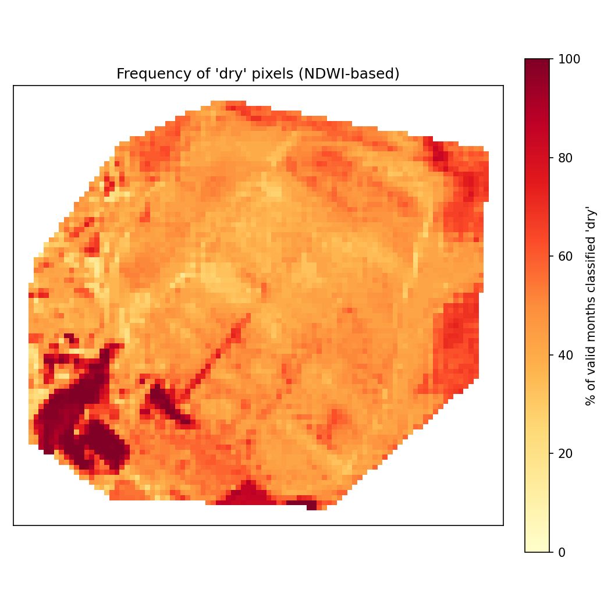
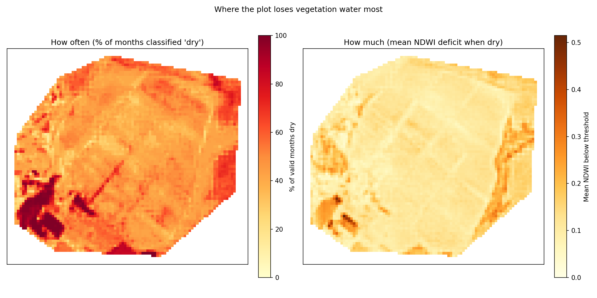
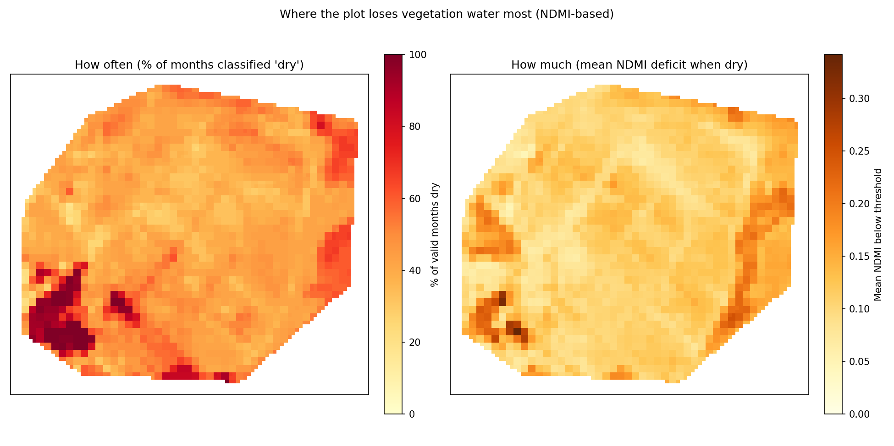
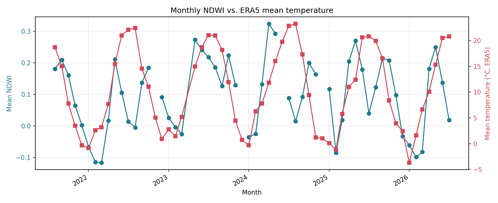

Up to five years of monthly Sentinel-2 median composites over the plot, reduced to three spectral indices server-side, then analysed locally: plot-average time series, a two-panel dryness map (frequency + magnitude) for both NDWI and NDMI, and an ERA5 temperature overlay to sanity-check whether moisture drops track warm spells.
NDVI tracks vegetation vigour; NDWI and NDMI are two moisture-proxy formulations of the same underlying signal (broad vs. narrow NIR band) - shown side by side rather than picked between, since they're correlated but not identical.

Vegetation vigour, (NIR−Red)/(NIR+Red).

Canopy/soil moisture, broad-NIR (Gao-family) formulation.

Moisture proxy, narrow-NIR (Sentinel Hub standard) formulation.
Per-pixel dryness frequency (% of months below threshold) and deficit magnitude (how badly, on the months it was dry) - the frequency map complements the magnitude map: a sector can be dry often but mildly, or rarely but severely.

% of valid months each pixel was classified "dry".

Frequency + average deficit magnitude, side by side.

Same analysis, narrow-NIR index - compare against the NDWI version.
NDWI merged against ERA5-based (Open-Meteo archive, no API key needed) monthly mean air temperature for the same window and location.

Pearson r ≈ 0.47 (NDWI) and ≈ 0.52 (NDMI) vs. temperature over the full history, printed by the script on every run - a sanity check, not a calibrated relationship.